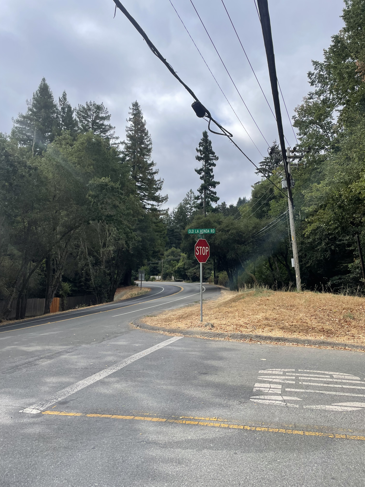
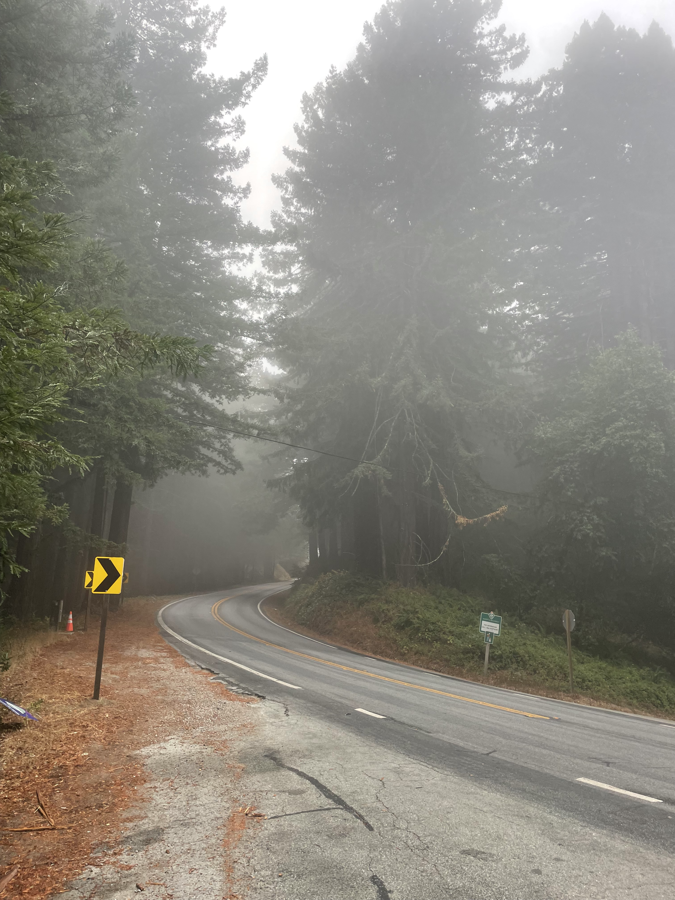
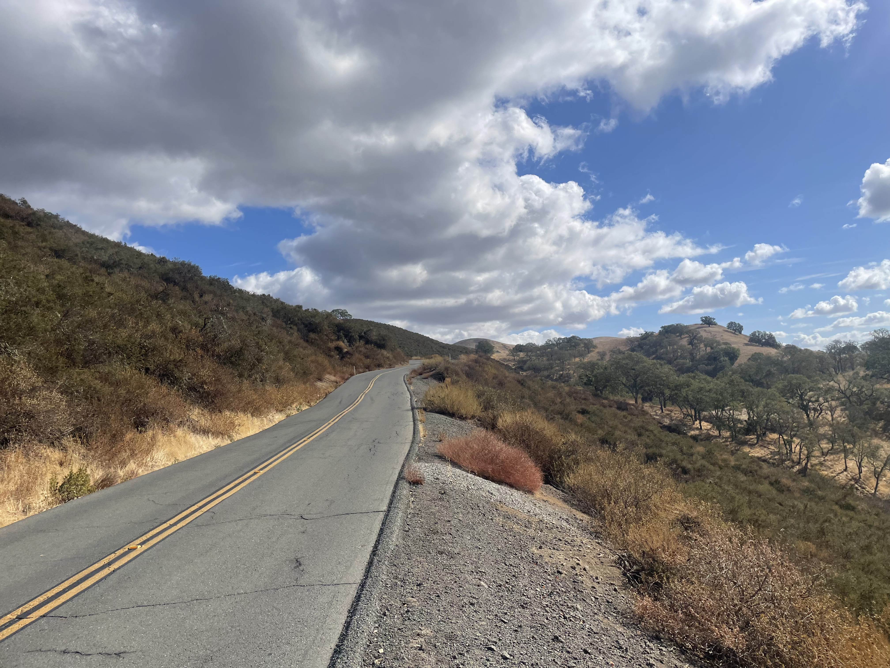

I have done Old La Honda in about 30 attempts over the span of a year once October this year comes around. Did it in 23:17 last week. Felt a bit tired and a little out of shape. But I will be back Fixed up the bike and got two new bottles of water and a seat bag
Last weeek, I did it in 22:44 which is pretty good as well. There were a lot of Alto Velo people and they caught up to me so I did Mile 3 in 7:05 but slowed down for the end.
Probably could have gone a little faster, but was still out of shape, maybe this week will be different!

Iconic

It is foggy at the end of one of the rides. Forgot when I took this picture but it was a beautiful experience

The start of the ride. It gives me great vibes. On the right is a farm with some horses and on the left is a little creek before the bridge

On the ride on November 2nd, 2024. It was a mistake to do this ride but I still got a nice shot of what the mountain looks like. Defenitely will be doing it again someday! and getting revenge!
>